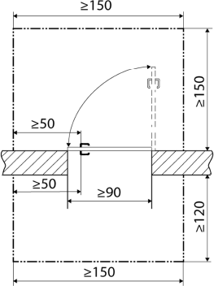
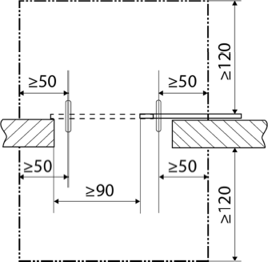
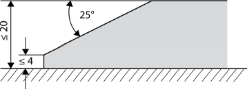
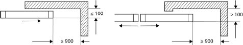
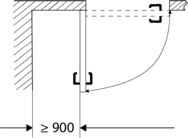

(1) Bei den Festlegungen zur Anordnung der Türen und Tore sowie deren Abmessungen sind die besonderen Anforderungen von Beschäftigten mit Behinderungen zu berücksichtigen. Je nach Auswirkung der Behinderung ist insbesondere auf Erkennbarkeit, Erreichbarkeit, Bedienbarkeit und Passierbarkeit zu achten.
(2) Erkennbarkeit wird erreicht, indem Türen für blinde Beschäftigte taktil wahrnehmbar (z. B. taktil eindeutig erkennbare Türblätter oder -zargen) und für Beschäftigte mit einer Sehbehinderung visuell kontrastierend gestaltet sind. Hierbei ist insbesondere auf den Kontrast zwischen Wand und Tür sowie zwischen Bedienelement und Türflügel zu achten.
(3) Erreichbarkeit von Drehflügeltüren ist gegeben, wenn für Beschäftigte, die eine Gehhilfe oder einen Rollstuhl benutzen, eine freie Bewegungsfläche sowie eine seitliche Anfahrbarkeit gemäß Abb. 1 gewährleistet wird. Wird die Bewegungsfläche, in die die Tür nicht aufschlägt, durch eine gegenüberliegende Wand begrenzt, muss die Breite der Bewegungsfläche von 120 cm auf 150 cm erhöht werden.

Abb. 1: Freie Bewegungsfläche sowie seitliche Anfahrbarkeit vor Drehflügeltüren (Maße in cm)
(4) Erreichbarkeit von Schiebetüren ist gegeben, wenn für Beschäftigte, die eine Gehhilfe oder einen Rollstuhl benutzen, eine freie Bewegungsfläche sowie eine seitliche Anfahrbarkeit gemäß Abb. 2 gewährleistet wird. Werden die Bewegungsflächen durch gegenüberliegende Wände begrenzt, muss die Breite der Bewegungsflächen von 120 cm auf 150 cm erhöht werden.

Abb. 2: Freie Bewegungsfläche sowie seitliche Anfahrbarkeit vor Schiebetüren (Maße in cm)
(5) Neben manuell betätigten Karusselltüren ist für Beschäftigte, die eine Gehhilfe oder einen Rollstuhl benutzen und für blinde Beschäftigte eine Drehflügel- oder eine Schiebetür anzuordnen.
(6) Kraftbetätigte Karusselltüren können von Beschäftigten, die eine Gehhilfe oder einen Rollstuhl benutzen, genutzt werden, wenn insbesondere folgende Bedingungen erfüllt sind.
(7) Die Anforderungen an Schlupftüren in Torflügeln entsprechen denen an Drehflügeltüren.
(8) Werden Bewegungsmelder als Türöffner verwendet, sind bei deren Betrieb die Belange von kleinwüchsigen (Unterlaufen), blinden (Tastbereich des Langstockes) und gehbehinderten (Gehgeschwindigkeit) Beschäftigten zu berücksichtigen.
(9) Bedienelemente von Türen und Toren, z. B. Türgriffe, Schalter, elektronische Zugangssysteme (z. B. Kartenleser), Notbehelfseinrichtungen (Abschalt- und NOTHALT-Einrichtungen), "Steuerungen mit Selbsthaltung" (Impulssteuerung) und "Steuerungen ohne Selbsthaltung" (Totmannsteuerung), müssen wahrnehmbar, erkennbar, erreichbar und nutzbar sein.
(10) Für Beschäftigte, die eine Gehhilfe oder einen Rollstuhl benutzen oder deren Hand-/Arm-Motorik eingeschränkt ist, darf der maximale Kraftaufwand für das Öffnen von handbetätigten Türen und Toren zur Einleitung einer Bewegung, z. B. des Türblatts, und für die Bedienung handbetätigter Beschläge, z. B. des Drückers, nicht mehr als 25 N betragen. Das maximale Moment für handbetätigte Beschläge darf nicht größer als 2,5 Nm sein. Können die Maximalwerte für Kraft oder Drehmoment nicht eingehalten werden, sind kraftbetätigte Türen und Tore vorzusehen.
Bei sensorisch gesteuerten Türen und Toren ist für sehbehinderte und blinde Beschäftigte sicherzustellen, dass keine Gefährdung durch das Öffnen des Flügels entsteht. Das kann erreicht werden, indem der Flügel rechtzeitig geöffnet wird oder, falls der Flügel in einen quer verlaufenden Verkehrsweg aufschlägt, beim Öffnen ein akustisches Signal ertönt.
(11) Durch das selbstständige Schließen von Türen mit Türschließern dürfen für Beschäftigte, die eine Gehhilfe oder einen Rollstuhl benutzen oder deren Hand-/Arm-Motorik eingeschränkt ist, keine Gefährdungen entstehen. Dies kann z. B. durch die Einstellung der Schließverzögerung erreicht werden.
(12) Für Beschäftigte, die einen Rollator oder Rollstuhl benutzen oder eine Fußhebeschwäche haben, sind untere Tür- oder Toranschläge und Schwellen zu vermeiden. Sind diese technisch erforderlich, dürfen sie nicht höher als 20 mm sein. Dieser Höhenunterschied ist durch Schrägen anzugleichen (Abb. 3).

Abb. 3: Schräge an einer Tür- oder Torschwelle (Maße in mm)
(13) Für Beschäftigte, die einen Rollstuhl benutzen, ist eine lichte Durchgangsbreite von Türen und Toren von mindestens 0,90 m erforderlich. (abweichend von ASR A1.7 Punkt 4 Abs. 6)
(14) Bei Ausfall der Antriebsenergie darf für Beschäftigte mit eingeschränkter Hand-/Arm-Motorik der Kraftaufwand zum manuellen Öffnen kraftbetätigter Türen und Tore zur Einleitung einer Bewegung und ebenso für die Bedienung handbetätigter Beschläge nicht mehr als 25 N betragen. Das maximale Moment für die Bedienung handbetätigter Beschläge darf nicht größer als 2,5 Nm sein. Falls dies nicht erreicht werden kann, sind durch die Gefährdungsbeurteilung alternative Maßnahmen festzulegen (z. B. zweiter Ausgang, Patenschaften). (abweichend von ASR A1.7 Punkt 5 Abs. 2 Satz 1)
(15) Ergänzende Anforderungen hinsichtlich der Kennzeichnung von Türen und Toren im Einbahnverkehr sind in dieser ASR im Anhang A1.3 enthalten. (ASR A1.7 Punkt 5 Abs. 4)
(16) Flügel von Türen und Toren, die zu mehr als drei Viertel ihrer Fläche aus einem durchsichtigen Werkstoff bestehen, müssen durch Sicherheitsmarkierungen so gekennzeichnet sein, dass sie für Beschäftigte mit Sehbehinderung, Beschäftigte die einen Rollstuhl benutzen und für kleinwüchsige Beschäftigte aus deren Augenhöhe erkennbar sind (ASR A1.7 Punkt 5 Abs. 7). Sicherheitsmarkierungen können z. B. aus 8 cm breiten durchgehenden Streifen bestehen, die in einer Höhe von 40-70 cm und 120-160 cm angebracht sind. Die Hauptschließkante von rahmenlosen Glas-Drehflügeltüren ist visuell kontrastierend zu gestalten.
(17) Ist eine Quetschgefährdung für Beschäftigte, die einen Rollstuhl benutzen, zwischen den hinteren Kanten der Flügel (Nebenschließkanten) von kraftbetätigten Schiebetüren/-toren und festen Teilen der Umgebung beim Betrieb nicht bereits durch Maßnahmen nach ASR A1.7 Punkt 6 Abs. 1 auszuschließen, müssen Sicherheitsabstände von ≥ 900 mm nach Abb. 4 eingehalten werden. (abweichend von ASR A1.7 Punkt 6 Abs. 7 Abb. 2 und 3)

Abb. 4: Vermeiden von Quetschgefährdungen zum Schutz von Beschäftigten, die einen Rollstuhl benutzen (Maße in mm)
(18) Für Beschäftigte, die einen Rollstuhl benutzen, müssen Quetschstellen zwischen dem Flügel und festen Teilen der Umgebung an kraftbetätigten Dreh- und Faltflügeltüren oder -toren vermieden werden. Dazu muss der hinter dem Flügel gelegene Bereich bei größtmöglicher Flügelöffnung über seine gesamte Tiefe eine lichte Weite von mindestens 900 mm aufweisen (Abb. 5) (abweichend zu ASR A1.7 Punkt 6 Abs. 8). Kann dieser Wert nicht eingehalten werden, sind weitere Sicherheitsmaßnahmen (siehe ASR A1.7 Punkt 6 Abs. 1) notwendig.

Abb. 5: Vermeiden von Quetschgefährdung (Maße in mm)
(19) Der Kraftaufwand für das manuelle Öffnen von kraftbetätigten Schiebetüren, Schnelllauftoren und Karusselltüren im Verlauf von Fluchtwegen bei Ausfall der Kraftbetätigung, z. B. bei Ausfall der Energiezufuhr, richtet sich nach Abs. 14. (abweichend von ASR A1.7 Punkt 9 Abs. 1 und Punkt 10.1 Abs. 3)
(20) Weitere Bestimmungen zur barrierefreien Gestaltung von Türen und Toren im Verlauf von Fluchtwegen sind im Anhang A2.3 dieser ASR enthalten.